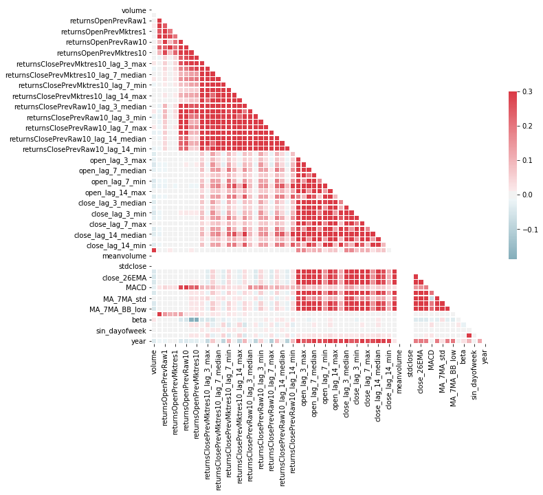
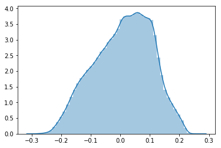
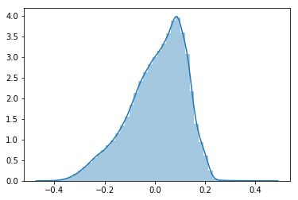
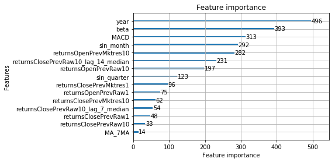
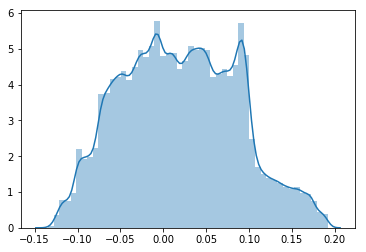
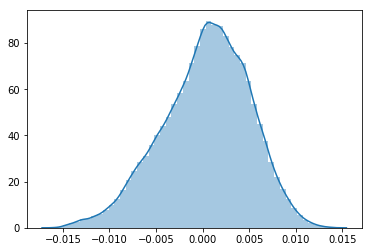
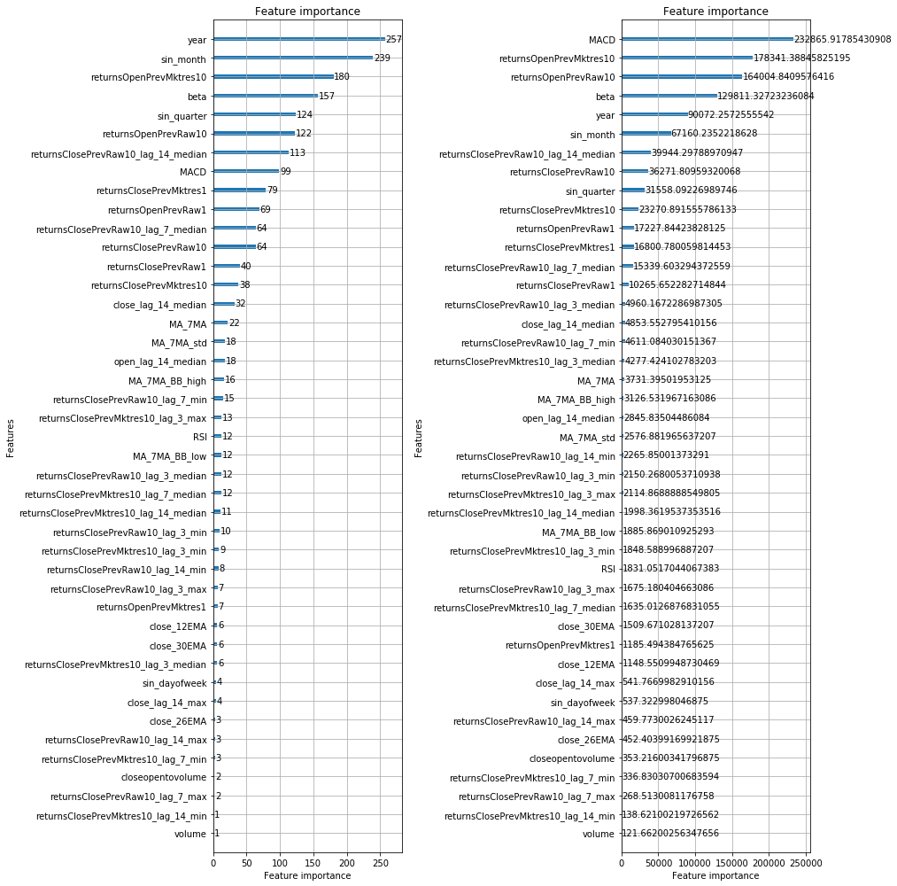

Applying models on data.¶
import pandas as pd
import numpy as np
import lightgbm as lgb
import matplotlib.pyplot as plt
from sklearn.preprocessing import StandardScaler
from sklearn.impute import SimpleImputer
from sklearn.metrics import confusion_matrix
from sklearn.linear_model import LogisticRegression
from lightgbm import LGBMClassifier
from sklearn.calibration import CalibratedClassifierCV
import seaborn as sns
from sklearn.linear_model import LinearRegression
from sklearn.linear_model import SGDRegressor
from sklearn.ensemble import RandomForestClassifier
from sklearn.ensemble import RandomForestRegressor
from sklearn.model_selection import TimeSeriesSplit
from sklearn.model_selection import RandomizedSearchCV
from sklearn.model_selection import GridSearchCV
from xgboost import XGBClassifier
traindata=pd.read_csv('train.csv')
testdata=pd.read_csv('test.csv')
traindata=traindata.iloc[:,1:]
testdata=testdata.iloc[:,1:]
traindata.columns
Index(['time', 'assetCode', 'assetName', 'volume', 'close', 'open',
'returnsClosePrevRaw1', 'returnsOpenPrevRaw1',
'returnsClosePrevMktres1', 'returnsOpenPrevMktres1',
'returnsClosePrevRaw10', 'returnsOpenPrevRaw10',
'returnsClosePrevMktres10', 'returnsOpenPrevMktres10',
'returnsOpenNextMktres10', 'universe', 'urgency', 'bodySize',
'companyCount', 'marketCommentary', 'sentenceCount', 'wordCount',
'relevance', 'sentimentClass', 'sentimentNegative', 'sentimentNeutral',
'sentimentPositive', 'sentimentWordCount', 'noveltyCount3D',
'volumeCounts3D', 'headlinelength',
'returnsClosePrevMktres10_lag_3_median',
'returnsClosePrevMktres10_lag_3_max',
'returnsClosePrevMktres10_lag_3_min',
'returnsClosePrevMktres10_lag_7_median',
'returnsClosePrevMktres10_lag_7_max',
'returnsClosePrevMktres10_lag_7_min',
'returnsClosePrevMktres10_lag_14_median',
'returnsClosePrevMktres10_lag_14_max',
'returnsClosePrevMktres10_lag_14_min',
'returnsClosePrevRaw10_lag_3_median', 'returnsClosePrevRaw10_lag_3_max',
'returnsClosePrevRaw10_lag_3_min', 'returnsClosePrevRaw10_lag_7_median',
'returnsClosePrevRaw10_lag_7_max', 'returnsClosePrevRaw10_lag_7_min',
'returnsClosePrevRaw10_lag_14_median',
'returnsClosePrevRaw10_lag_14_max', 'returnsClosePrevRaw10_lag_14_min',
'open_lag_3_median', 'open_lag_3_max', 'open_lag_3_min',
'open_lag_7_median', 'open_lag_7_max', 'open_lag_7_min',
'open_lag_14_median', 'open_lag_14_max', 'open_lag_14_min',
'close_lag_3_median', 'close_lag_3_max', 'close_lag_3_min',
'close_lag_7_median', 'close_lag_7_max', 'close_lag_7_min',
'close_lag_14_median', 'close_lag_14_max', 'close_lag_14_min',
'closeopentovolume', 'meanvolume', 'meanclose', 'stdclose', 'dayofweek',
'quarter', 'month', 'year', 'close_30EMA', 'close_26EMA', 'close_12EMA',
'MACD', 'MA_7MA', 'MA_7MA_std', 'MA_7MA_BB_high', 'MA_7MA_BB_low',
'RSI', 'beta', 'sin_quarter', 'sin_dayofweek', 'sin_month'],
dtype='object')
traindata['time']=pd.to_datetime(traindata['time'], format='%Y-%m-%d')
testdata['time']=pd.to_datetime(testdata['time'], format='%Y-%m-%d')
universe_test = testdata['universe']
time_test = testdata['time']
universe_train=traindata['universe']
time_train=traindata['time']
y_train=(traindata.returnsOpenNextMktres10>=0).astype('int')
y_test=(testdata.returnsOpenNextMktres10>=0).astype('int')
y_train1=traindata.returnsOpenNextMktres10
y_test1=testdata.returnsOpenNextMktres10
Removing news data¶
cols=['volume','returnsClosePrevRaw1', 'returnsOpenPrevRaw1',
'returnsClosePrevMktres1', 'returnsOpenPrevMktres1',
'returnsClosePrevRaw10', 'returnsOpenPrevRaw10',
'returnsClosePrevMktres10', 'returnsOpenPrevMktres10',
'returnsClosePrevMktres10_lag_3_median',
'returnsClosePrevMktres10_lag_3_max',
'returnsClosePrevMktres10_lag_3_min',
'returnsClosePrevMktres10_lag_7_median',
'returnsClosePrevMktres10_lag_7_max',
'returnsClosePrevMktres10_lag_7_min',
'returnsClosePrevMktres10_lag_14_median',
'returnsClosePrevMktres10_lag_14_max',
'returnsClosePrevMktres10_lag_14_min',
'returnsClosePrevRaw10_lag_3_median', 'returnsClosePrevRaw10_lag_3_max',
'returnsClosePrevRaw10_lag_3_min', 'returnsClosePrevRaw10_lag_7_median',
'returnsClosePrevRaw10_lag_7_max', 'returnsClosePrevRaw10_lag_7_min',
'returnsClosePrevRaw10_lag_14_median',
'returnsClosePrevRaw10_lag_14_max', 'returnsClosePrevRaw10_lag_14_min',
'open_lag_3_median', 'open_lag_3_max', 'open_lag_3_min',
'open_lag_7_median', 'open_lag_7_max', 'open_lag_7_min',
'open_lag_14_median', 'open_lag_14_max', 'open_lag_14_min',
'close_lag_3_median', 'close_lag_3_max', 'close_lag_3_min',
'close_lag_7_median', 'close_lag_7_max', 'close_lag_7_min',
'close_lag_14_median', 'close_lag_14_max', 'close_lag_14_min',
'closeopentovolume', 'meanvolume', 'meanclose', 'stdclose','close_30EMA', 'close_26EMA', 'close_12EMA',
'MACD', 'MA_7MA', 'MA_7MA_std', 'MA_7MA_BB_high', 'MA_7MA_BB_low',
'RSI', 'beta', 'sin_quarter', 'sin_dayofweek', 'sin_month','year']
X_train=traindata[cols]
X_test=testdata[cols]
corr = X_train.corr()
mask = np.zeros_like(corr, dtype=np.bool)
mask[np.triu_indices_from(mask)] = True
f, ax = plt.subplots(figsize=(11, 9))
cmap = sns.diverging_palette(220, 10, as_cmap=True)
sns.heatmap(corr, mask=mask, cmap=cmap, vmax=.3, center=0,
square=True, linewidths=.5, cbar_kws={"shrink": .5})
<matplotlib.axes._subplots.AxesSubplot at 0x1ea4062aac8>

Defining custom metric functions¶
def sigma_score(pred,valid_data):
pred=np.clip(pred,-1,1)
if(len(pred)==len(y_test)):
df_time = time_test.factorize()[0]
universe=universe_test
labels=y_test1*universe
elif(len(pred)==len(y_train)):
df_time = time_train.factorize()[0]
universe=universe_train
labels=y_train1*universe
x_t = pred * labels
x_t_sum = x_t.groupby(df_time).sum()
score = x_t_sum.mean() / x_t_sum.std()
return 'sigma_score', score, True
def sigma_score_2(preds, valid_data):
preds=preds*2-1
if(len(preds)==len(y_train)):
df_time= time_train.factorize()[0]
labels=y_train1
x_t = preds*labels*universe_train
# df_time = valid_data.params['extra_time']
# labels = valid_data.get_label()
elif(len(preds)==len(y_test)):
df_time= time_test.factorize()[0]
labels=y_test1
x_t = preds*labels*universe_test
# labels=y_test
# preds=pd.DataFrame(preds).clip(-1,1).values
# preds=preds.reshape(len(preds), )
# assert len(labels) == len(df_time)
# * df_valid['universe'] -> Here we take out the 'universe' term because we already keep only those equals to 1.
# Here we take advantage of the fact that `labels` (used to calculate `x_t`)
# is a pd.Series and call `group_by`
x_t_sum = x_t.groupby(df_time).sum()
score = x_t_sum.mean() / x_t_sum.std()
return 'sigma_score', score, True
Time series split¶
tscv = TimeSeriesSplit(n_splits=2)
Classifiers¶
Logistic regression¶
model=LogisticRegression()
model.fit(X_train,y_train)
C:\Users\chinn\Anaconda3\lib\site-packages\sklearn\linear_model\logistic.py:433: FutureWarning: Default solver will be changed to 'lbfgs' in 0.22. Specify a solver to silence this warning.
FutureWarning)
LogisticRegression(C=1.0, class_weight=None, dual=False, fit_intercept=True,
intercept_scaling=1, max_iter=100, multi_class='warn',
n_jobs=None, penalty='l2', random_state=None, solver='warn',
tol=0.0001, verbose=0, warm_start=False)
y_pred=model.predict_proba(X_test)
sigma_score(y_pred[:,1]*2-1,y_test1.values)
('sigma_score', 0.37416417744774055, True)
clf = LogisticRegression()
param_grid = {
'C': [0.001,0.01,0.1,1,10],
'penalty':['l2']
}
rfc = RandomizedSearchCV(estimator=clf, param_distributions =param_grid, cv= tscv,n_jobs=-1,scoring ='neg_log_loss')
rfc.fit(X_train, y_train)
y_pred=clf.predict_proba(X_test)
y_pred=y_pred[:,1]*2-1
sigma_score(y_pred,y_test1)
Random forest¶
clf = RandomForestClassifier(n_jobs=-1)
model=clf.fit(X_train,y_train)
C:\Users\chinn\Anaconda3\lib\site-packages\sklearn\ensemble\forest.py:246: FutureWarning: The default value of n_estimators will change from 10 in version 0.20 to 100 in 0.22.
"10 in version 0.20 to 100 in 0.22.", FutureWarning)
y_pred=clf.predict_proba(X_test)
y_pred=y_pred[:,1]*2-1
sigma_score(y_pred,y_test1)
('sigma_score', 0.3750540242407995, True)
Calibrated on RF¶
from sklearn.calibration import CalibratedClassifierCV
calibrated_clf = CalibratedClassifierCV(model, method='sigmoid', cv=tscv)
calibrated_clf.fit(X_train, y_train)
CalibratedClassifierCV(base_estimator=RandomForestClassifier(bootstrap=True, class_weight=None, criterion='gini',
max_depth=None, max_features='auto', max_leaf_nodes=None,
min_impurity_decrease=0.0, min_impurity_split=None,
min_samples_leaf=1, min_samples_split=2,
min_weight_fraction_leaf=0.0, n_estimators=10, n_jobs=-1,
oob_score=False, random_state=None, verbose=0,
warm_start=False),
cv=TimeSeriesSplit(max_train_size=None, n_splits=2),
method='sigmoid')
Ytrainpred=calibrated_clf.predict_proba(X_train)
Ytestpred=calibrated_clf.predict_proba(X_test)
ytrainpred=Ytrainpred[:,1]
ytestpred=Ytestpred[:,1]
sigma_score(ytrainpred*2-1,y_train1.values)
('sigma_score', 1.1045316341808502, True)
sigma_score(ytestpred*2-1,y_train1.values)
('sigma_score', 0.4862011486445091, True)
feature_importances = pd.DataFrame(clf.feature_importances_,
index = X_train.columns,
columns=['importance']).sort_values('importance',ascending=False)
feature_importances.tail()
| importance | |
|---|---|
| sin_dayofweek | 0.006310 |
| sin_quarter | 0.003783 |
| stdclose | 0.000000 |
| meanclose | 0.000000 |
| meanvolume | 0.000000 |
Grid search on RF¶
clf = RandomForestClassifier(n_jobs=-1)
param_grid = {
'n_estimators': [100,200,300,500],
'max_depth' : [4,5,6,7,8],
}
rfc = RandomizedSearchCV(estimator=clf, param_distributions =param_grid, cv= tscv,n_jobs=-1,scoring ='neg_log_loss')
rfc.fit(X_train, y_train)
RandomizedSearchCV(cv=TimeSeriesSplit(max_train_size=None, n_splits=2),
error_score='raise-deprecating',
estimator=RandomForestClassifier(bootstrap=True, class_weight=None, criterion='gini',
max_depth=None, max_features='auto', max_leaf_nodes=None,
min_impurity_decrease=0.0, min_impurity_split=None,
min_samples_leaf=1, min_samples_split=2,
min_weight_fraction_leaf=0.0, n_estimators='warn', n_jobs=-1,
oob_score=False, random_state=None, verbose=0,
warm_start=False),
fit_params=None, iid='warn', n_iter=10, n_jobs=-1,
param_distributions={'n_estimators': [100, 200, 300, 500], 'max_depth': [4, 5, 6, 7, 8]},
pre_dispatch='2*n_jobs', random_state=None, refit=True,
return_train_score='warn', scoring='neg_log_loss', verbose=0)
rfc.best_params_
{'n_estimators': 300, 'max_depth': 8}
y_pred=rfc.predict_proba(X_train)*2-1
y_pred=y_pred[:,1]
sigma_score(y_pred,y_train1)
('sigma_score', 0.7134924265006625, True)
y_pred=rfc.predict_proba(X_test)*2-1
sigma_score(y_pred[:,1],y_test1)
('sigma_score', 0.5346658390165596, True)
sns.distplot(y_pred[:,1])
C:\Users\chinn\Anaconda3\lib\site-packages\scipy\stats\stats.py:1713: FutureWarning: Using a non-tuple sequence for multidimensional indexing is deprecated; use `arr[tuple(seq)]` instead of `arr[seq]`. In the future this will be interpreted as an array index, `arr[np.array(seq)]`, which will result either in an error or a different result.
return np.add.reduce(sorted[indexer] * weights, axis=axis) / sumval
<matplotlib.axes._subplots.AxesSubplot at 0x1ea4b178550>

confusion_matrix(y_test,y_pred[:,1]>=0)
array([[173933, 189148],
[136749, 217843]], dtype=int64)
Calibrated on tuned model¶
from sklearn.calibration import CalibratedClassifierCV
clf = RandomForestClassifier(n_estimators=300,max_depth=7)
calibrated_clf = CalibratedClassifierCV(clf, method='sigmoid', cv=tscv)
calibrated_clf.fit(X_train, y_train)
CalibratedClassifierCV(base_estimator=RandomForestClassifier(bootstrap=True, class_weight=None, criterion='gini',
max_depth=7, max_features='auto', max_leaf_nodes=None,
min_impurity_decrease=0.0, min_impurity_split=None,
min_samples_leaf=1, min_samples_split=2,
min_weight_fraction_leaf=0.0, n_estimators=300, n_jobs=None,
oob_score=False, random_state=None, verbose=0,
warm_start=False),
cv=TimeSeriesSplit(max_train_size=None, n_splits=2),
method='sigmoid')
y_pred=calibrated_clf.predict_proba(X_test)
sigma_score(y_pred[:,1]*2-1,y_test1)
('sigma_score', 0.5485461670781893, True)
y_pred=calibrated_clf.predict_proba(X_train)
sigma_score(y_pred[:,1]*2-1,y_train1)
('sigma_score', 0.6121033369983073, True)
y_pred=y_pred[:,1]>=0
confusion_matrix(y_train,y_pred)
array([[ 0, 1280993],
[ 0, 1341474]], dtype=int64)
y_pred=calibrated_clf.predict_proba(X_train)
y_pred=y_pred[:,1]*2-1
sns.distplot(y_pred)
<matplotlib.axes._subplots.AxesSubplot at 0x1f8569cdd30>

train_cols = X_train.columns.tolist()
# Note: y data is expected to be a pandas Series, as we will use its group_by function in `sigma_score`
dtrain = lgb.Dataset(X_train.values, y_train,feature_name=train_cols,free_raw_data=False)
dvalid = lgb.Dataset(X_test.values, y_test,feature_name=train_cols, free_raw_data=False)
params = {'boosting_type': 'gbdt',
'max_depth' : -1,
'objective': 'binary',
'nthread': 3, # Updated from nthread
'num_leaves': 64,
'learning_rate': 0.05,
'max_bin': 512,
'subsample_for_bin': 200,
'subsample': 1,
'subsample_freq': 1,
'colsample_bytree': 0.8,
'reg_alpha': 5,
'reg_lambda': 10,
'min_split_gain': 0.5,
'min_child_weight': 1,
'min_child_samples': 5,
'scale_pos_weight': 1,
'num_class' : 1,
'metric' : 'binary_error'}
# Create parameters to search
gridParams = {
'learning_rate': [0.005],
'n_estimators': [40,150],
'num_leaves': [6,8,12],
'boosting_type' : ['gbdt'],
'objective' : ['binary'],
'random_state' : [501], # Updated from 'seed'
'colsample_bytree' : [0.65, 0.66],
'subsample' : [0.7,0.75],
'reg_alpha' : [1,1.2],
'reg_lambda' : [1,1.2,1.4],
}
# Create classifier to use. Note that parameters have to be input manually
# not as a dict!
evals_result = {}
mdl = lgb.LGBMClassifier(boosting_type= 'gbdt',
objective = 'binary',
n_jobs = 3,
silent = False,
max_depth = params['max_depth'],
max_bin = params['max_bin'],
subsample_for_bin = params['subsample_for_bin'],
subsample = params['subsample'],
subsample_freq = params['subsample_freq'],
min_split_gain = params['min_split_gain'],
min_child_weight = params['min_child_weight'],
min_child_samples = params['min_child_samples'],
scale_pos_weight = params['scale_pos_weight'])
# To view the default model params:
mdl.get_params().keys()
# Create the grid
grid = RandomizedSearchCV(mdl, gridParams,
verbose=0,
cv=tscv,
n_jobs=2,scoring='neg_log_loss')
# Run the grid
grid.fit(X_train,y_train)
# Print the best parameters found
print(grid.best_params_)
print(grid.best_score_)
{'subsample': 0.75, 'reg_lambda': 1.2, 'reg_alpha': 1, 'random_state': 501, 'objective': 'binary', 'num_leaves': 12, 'n_estimators': 150, 'learning_rate': 0.005, 'colsample_bytree': 0.66, 'boosting_type': 'gbdt'}
-0.6895867716593379
x_1 = [0.19000424246380565, 2452, 212, 328, 202]
params_1 = {
'task': 'train',
'boosting_type': 'gbdt',
'objective': 'binary',
'learning_rate': 0.005,
'num_iteration': 500,
'n_estimators':150,
'colsample_bytree': 0.66,
'subsample': 0.75,
'verbose': 1,
'metric':None,
'reg_lambda': 1.2,
'reg_alpha': 1,
'random_state': 501,
'objective': 'binary',
'num_leaves': 12
}
gbm_1 = lgb.train(params_1,
dtrain,
num_boost_round=1000,
valid_sets=dvalid,
feval=sigma_score_2,
early_stopping_rounds=30,
verbose_eval=25
)
C:\Users\chinn\Anaconda3\lib\site-packages\lightgbm\engine.py:113: UserWarning: Found `num_iteration` in params. Will use it instead of argument
warnings.warn("Found `{}` in params. Will use it instead of argument".format(alias))
Training until validation scores don't improve for 30 rounds.
[25] valid_0's binary_logloss: 0.692633 valid_0's sigma_score: 0.0795633
[50] valid_0's binary_logloss: 0.691774 valid_0's sigma_score: 0.273122
[75] valid_0's binary_logloss: 0.691024 valid_0's sigma_score: 0.397076
[100] valid_0's binary_logloss: 0.690331 valid_0's sigma_score: 0.477671
[125] valid_0's binary_logloss: 0.689849 valid_0's sigma_score: 0.52121
[150] valid_0's binary_logloss: 0.689309 valid_0's sigma_score: 0.551341
[175] valid_0's binary_logloss: 0.688996 valid_0's sigma_score: 0.562054
[200] valid_0's binary_logloss: 0.688644 valid_0's sigma_score: 0.572705
[225] valid_0's binary_logloss: 0.688447 valid_0's sigma_score: 0.573533
[250] valid_0's binary_logloss: 0.688145 valid_0's sigma_score: 0.579904
[275] valid_0's binary_logloss: 0.687972 valid_0's sigma_score: 0.579298
Early stopping, best iteration is:
[254] valid_0's binary_logloss: 0.688098 valid_0's sigma_score: 0.580737
plt.figure(figsize=(40,20))
lgb.plot_importance(gbm_1,max_num_features=15)
plt.show()
<Figure size 2880x1440 with 0 Axes>

y_pred=gbm_1.predict(X_train)
sigma_score(y_pred*2-1,y_train1)
('sigma_score', 0.6859160729981825, True)
y_pred=gbm_1.predict(X_test)
sigma_score(y_pred*2-1,y_test1)
('sigma_score', 0.5807365552305024, True)
sns.distplot(y_pred*2-1)
<matplotlib.axes._subplots.AxesSubplot at 0x1f8875b84e0>

clf = lgb.LGBMClassifier(task= 'train',
boosting_type= 'gbdt',
objective='binary',
learning_rate= 0.005,
num_iteration= 500,
n_estimators=150,
colsample_bytree= 0.66,
subsample= 0.75,
verbose =1,
reg_lambda= 1.2,
reg_alpha= 1,
random_state= 501,
num_leaves= 12
)
calibrated_clf = CalibratedClassifierCV(clf, method='isotonic', cv=tscv)
calibrated_clf.fit(X_train, y_train)
C:\Users\chinn\Anaconda3\lib\site-packages\lightgbm\engine.py:113: UserWarning: Found `num_iteration` in params. Will use it instead of argument
warnings.warn("Found `{}` in params. Will use it instead of argument".format(alias))
C:\Users\chinn\Anaconda3\lib\site-packages\lightgbm\engine.py:113: UserWarning: Found `num_iteration` in params. Will use it instead of argument
warnings.warn("Found `{}` in params. Will use it instead of argument".format(alias))
CalibratedClassifierCV(base_estimator=LGBMClassifier(boosting_type='gbdt', class_weight=None, colsample_bytree=0.66,
importance_type='split', learning_rate=0.005, max_depth=-1,
min_child_samples=20, min_child_weight=0.001, min_split_gain=0.0,
n_estimators=150, n_jobs=-1, num_iteration=500, num_leaves=12,
objective='binary', random_state=501, reg_alpha=1, reg_lambda=1.2,
silent=True, subsample=0.75, subsample_for_bin=200000,
subsample_freq=0, task='train', verbose=1),
cv=TimeSeriesSplit(max_train_size=None, n_splits=2),
method='isotonic')
Ytrainpred=calibrated_clf.predict_proba(X_train)
Ytestpred=calibrated_clf.predict_proba(X_test)
ytrainpred=Ytrainpred[:,1]
ytestpred=Ytestpred[:,1]
sigma_score(ytrainpred*2-1,y_train1.values)
('sigma_score', 0.6237107583636623, True)
sigma_score(ytestpred*2-1,y_train1.values)
('sigma_score', 0.5677100719773357, True)
xgb = XGBClassifier(learning_rate=0.1, n_estimators=300, objective='binary:logistic',
silent=True, nthread=2)
model=xgb.fit(X_train,y_train)
y_pred=xgb.predict_proba(X_test)
sigma_score(y_pred[:,1]*2-1,y_test1)
('sigma_score', 0.48366598850149906, True)
y_pred=xgb.predict_proba(X_train)
sigma_score(y_pred[:,1]*2-1,y_train1)
('sigma_score', 0.8113740249829478, True)
y_pred=y_pred[:,1]>=0
confusion_matrix(y_train,y_pred)
array([[601906, 679087],
[447189, 894285]], dtype=int64)
xgb = XGBClassifier(objective='binary:logistic')
clf = RandomizedSearchCV(xgb,{'max_depth': [2,4,6],
'n_estimators': [50,100,200]},
verbose=1,
scoring='neg_log_loss',
cv= tscv,n_jobs=-1
)
clf.fit(X_train,y_train)
clf.best_score_, clf.best_params_
C:\Users\chinn\Anaconda3\lib\site-packages\sklearn\model_selection\_search.py:271: UserWarning: The total space of parameters 9 is smaller than n_iter=10. Running 9 iterations. For exhaustive searches, use GridSearchCV.
% (grid_size, self.n_iter, grid_size), UserWarning)
[Parallel(n_jobs=-1)]: Using backend LokyBackend with 4 concurrent workers.
Fitting 2 folds for each of 9 candidates, totalling 18 fits
[Parallel(n_jobs=-1)]: Done 18 out of 18 | elapsed: 167.0min finished
(-0.6870596950771145, {'n_estimators': 50, 'max_depth': 2})
y_pred=clf.predict_proba(X_test)
sigma_score(y_pred[:,1]*2-1,y_test1)
('sigma_score', 0.5466463282705594, True)
y_pred=clf.predict_proba(X_train)
sigma_score(y_pred[:,1]*2-1,y_train1)
('sigma_score', 0.6633845835678877, True)
y_pred=y_pred[:,1]>=0
confusion_matrix(y_train,y_pred)
array([[ 0, 1280993],
[ 0, 1341474]], dtype=int64)
Calibrated on XG BOOST¶
xgb = XGBClassifier(objective='binary:logistic',n_estimators=50,max_depth=2)
from sklearn.calibration import CalibratedClassifierCV
calibrated_clf = CalibratedClassifierCV(xgb, method='sigmoid', cv=tscv)
calibrated_clf.fit(X_train, y_train)
CalibratedClassifierCV(base_estimator=XGBClassifier(base_score=0.5, booster='gbtree', colsample_bylevel=1,
colsample_bytree=1, gamma=0, learning_rate=0.1, max_delta_step=0,
max_depth=2, min_child_weight=1, missing=None, n_estimators=50,
n_jobs=1, nthread=None, objective='binary:logistic', random_state=0,
reg_alpha=0, reg_lambda=1, scale_pos_weight=1, seed=None,
silent=True, subsample=1),
cv=TimeSeriesSplit(max_train_size=None, n_splits=2),
method='sigmoid')
Ytrainpred=calibrated_clf.predict_proba(X_train)
Ytestpred=calibrated_clf.predict_proba(X_test)
ytrainpred=Ytrainpred[:,1]
ytestpred=Ytestpred[:,1]
sigma_score(ytrainpred*2-1,y_train1.values)
('sigma_score', 0.5896574335387855, True)
sigma_score(ytestpred*2-1,y_test1.values)
('sigma_score', 0.549996122565269, True)
Using regression¶
train_cols = X_train.columns.tolist()
# Note: y data is expected to be a pandas Series, as we will use its group_by function in `sigma_score`
dtrain = lgb.Dataset(X_train.values, y_train1,feature_name=train_cols, free_raw_data=False)
dvalid = lgb.Dataset(X_test.values, y_test1,feature_name=train_cols,free_raw_data=False)
lgb_params = dict(
objective = 'regression_l1',
learning_rate = 0.005,
bagging_fraction = 0.75,
bagging_freq = 2,
feature_fraction = 0.5,
num_iteration= 500,
n_estimators=150,
colsample_bytree= 0.66,
subsample= 0.75,
verbose =1,
reg_lambda= 1.2,
reg_alpha= 1,
random_state= 501,
num_leaves= 12,
lambda_l1 = 0.5,
lambda_l2 = 1.0,
metric = 'None', # This will ignore the loss objetive and use sigma_score instead,
seed = 0 # Change for better luck! :)
)
evals_result = {}
m = lgb.train(lgb_params, dtrain, num_boost_round=1000, valid_sets=(dtrain,dvalid), valid_names=('train','valid'), verbose_eval=25, feval=sigma_score, evals_result=evals_result)
df_result = pd.DataFrame(evals_result['valid'])
C:\Users\chinn\Anaconda3\lib\site-packages\lightgbm\engine.py:113: UserWarning: Found `num_iteration` in params. Will use it instead of argument
warnings.warn("Found `{}` in params. Will use it instead of argument".format(alias))
[25] train's sigma_score: 0.418809 valid's sigma_score: 0.117999
[50] train's sigma_score: 0.568597 valid's sigma_score: 0.307166
[75] train's sigma_score: 0.620927 valid's sigma_score: 0.421572
[100] train's sigma_score: 0.635875 valid's sigma_score: 0.482216
[125] train's sigma_score: 0.636294 valid's sigma_score: 0.512729
[150] train's sigma_score: 0.638908 valid's sigma_score: 0.531243
[175] train's sigma_score: 0.636937 valid's sigma_score: 0.5422
[200] train's sigma_score: 0.637198 valid's sigma_score: 0.547239
[225] train's sigma_score: 0.635802 valid's sigma_score: 0.551443
[250] train's sigma_score: 0.632717 valid's sigma_score: 0.554628
[275] train's sigma_score: 0.633287 valid's sigma_score: 0.554167
[300] train's sigma_score: 0.634656 valid's sigma_score: 0.556521
[325] train's sigma_score: 0.63648 valid's sigma_score: 0.556715
[350] train's sigma_score: 0.637532 valid's sigma_score: 0.55786
[375] train's sigma_score: 0.636781 valid's sigma_score: 0.558729
[400] train's sigma_score: 0.637117 valid's sigma_score: 0.558295
[425] train's sigma_score: 0.637578 valid's sigma_score: 0.558153
[450] train's sigma_score: 0.638075 valid's sigma_score: 0.558225
[475] train's sigma_score: 0.637123 valid's sigma_score: 0.558062
[500] train's sigma_score: 0.636048 valid's sigma_score: 0.557664
y_pred=m.predict(X_test)
sns.distplot(y_pred)
<matplotlib.axes._subplots.AxesSubplot at 0x1f88893d978>

fig, ax = plt.subplots(1, 2, figsize=(14, 14))
lgb.plot_importance(m, ax=ax[0])
lgb.plot_importance(m, ax=ax[1], importance_type='gain')
fig.tight_layout()

clf = RandomForestRegressor(n_estimators=200, max_depth=5,random_state=0,n_jobs=-1)
model=clf.fit(X_train,y_train1)
y_pred=model.predict(X_test)
sigma_score(y_pred,y_test1)
('sigma_score', 0.3476250043396745, True)
feature_importances = pd.DataFrame(clf.feature_importances_,
index = X_train.columns,
columns=['importance']).sort_values('importance',ascending=False)
feature_importances.head()
| importance | |
|---|---|
| returnsClosePrevMktres10_lag_14_min | 0.267275 |
| close_30EMA | 0.132671 |
| close_26EMA | 0.131267 |
| returnsOpenPrevMktres1 | 0.044182 |
| returnsOpenPrevRaw10 | 0.037511 |
#model = RandomForestRegressor()
#param_grid = {
# 'n_estimators': [100,250,500],
# 'max_depth' : [3,5,7],
#}
#rfc = GridSearchCV(estimator=model, param_distributions =param_grid, cv= tscv,n_jobs=2)
#rfc.fit(X_train, y_train)
C:\Users\chinn\Anaconda3\lib\site-packages\sklearn\model_selection\_search.py:271: UserWarning: The total space of parameters 9 is smaller than n_iter=10. Running 9 iterations. For exhaustive searches, use GridSearchCV.
% (grid_size, self.n_iter, grid_size), UserWarning)
#rfc.best_params_
#y_pred=rfc.predict(X_test)
#sns.distplot(y_pred)
#sigma_score(y_pred,y_train1)